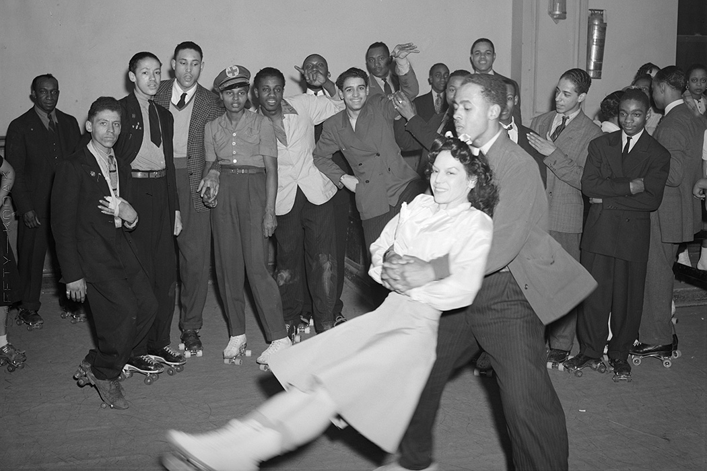

Roller Skaters all around the world, Skate Global has the tour for you. See it here first a movemoent first of it's kind, rooting from the sole of man, nuturing your initial steps into the safe embrace of Afro-Movement on wheels. Turning steps into glides with a little Bburning sensation in the thighs. Our approach at Skate Global incorporates the integrity of skating, making Skate Globl a pioneer in highlighting the strong & involved presence, moorish society has contributed to the skate nation since it's invention in 1743. With that being said Skate Global is welcoming to all walks of life. We acknowledge the added effort that people expect from companies like ours, when it comes to encouraging all people to join hands, set aside difference and have fun. Lets Roll A Mile Together.
Invented Since 1743
In the U.S. our mental image of people skating may involvs a blonde woman in Daisy Dukes skating by the Pacific Ocean or a bell-bottomed disco enthusiast skate-dancing to ABBA in hot polyester. But the first recorded use of skates took place more than two centuries before any of that, in a 1743 theater production in which actors affixed wheels to their footwear to mimic ice skating on the stage. The wheeled debut of inventor John Joseph Merlin made a lasting impression on the historical record.
Roller skating is deeply tied to early hip-hop culture. Rappers like Queen Latifah and N.W.A. performed at the now-closed Skateland rolling rink in the mid-1980s when other venues shunned Black acts. Meanwhile, every city had — and continues to have — its own signature skating style from Los Angeles to Chicago. Historically, skating dates back to the civil rights movement, when Black skaters protested desegregated rinks in the 1960s. Documentaries like United Skates, which premiered in 2018, showcases the significance of skating rinks for Black communities and the Black activists who were fighting to keep rinks open as they faced closures. “You can take the goddamn building, but you can’t take the spirit,” a DJ says in the film. It’s a quote that still resonates.